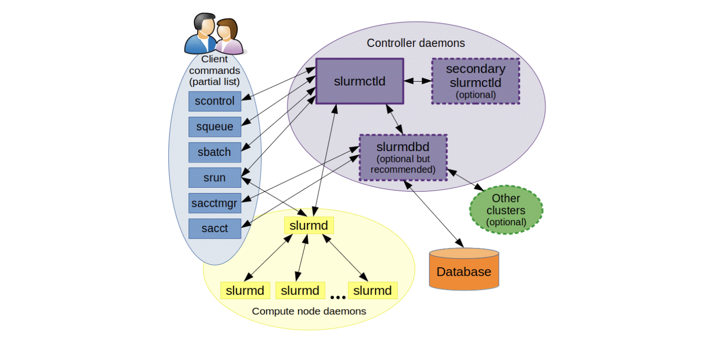

Introduction
我们在做生物信息分析时，对于大规模的上游数据的处理，一般需要在大型服务器或集群上进行。我最早接触并使用的是一个基于SLURM调度系统的集群，在此记录一下基础使用方法。
高性能计算集群（High-Performance Computing Cluster，简称HPC集群）是一种计算系统，通过将多台计算机（通常称为节点）连接在一起，协同工作来解决需要大量计算资源的问题。这些集群被广泛应用于科学研究、工程计算、金融建模、大数据分析等领域。
SLURM（Simple Linux Utility for Resource Management）是一种开放源码的资源管理和任务调度系统，广泛应用于高性能计算（HPC）集群。SLURM负责分配计算资源、调度作业、监控系统状态和用户任务等工作，是HPC集群中不可或缺的一部分。
主要功能
-
资源分配：SLURM能够根据用户需求和集群资源情况，动态分配计算节点、CPU、内存和其他资源，确保资源的高效利用。
-
任务调度：SLURM可以将用户提交的计算任务按照优先级、依赖关系和资源需求进行调度，决定何时在何处执行这些任务。
-
任务管理：用户可以通过SLURM提交、监控和管理他们的任务，包括查看任务状态、取消任务、重新排队等操作。
-
负载均衡：SLURM通过智能调度算法，尽量均衡各节点的负载，避免资源浪费，提高集群的整体效率。
-
作业依赖管理：支持复杂的作业依赖关系管理，例如在一个作业完成后再启动另一个作业，或多个作业之间的依赖关系管理。
工作流程
- 提交作业：用户通过
sbatch命令提交编写好的作业脚本，描述作业的资源需求（如节点数、CPU数、内存等）和执行命令。 - 资源分配：SLURM的调度器（slurmctld）根据当前的资源可用情况和作业队列中的优先级，分配资源给新提交的作业。
- 作业执行：分配到资源的作业通过
srun命令在指定的节点上启动并运行。 - 作业监控：运行中的作业由slurmd守护进程进行监控，用户可以使用
squeue命令查看作业的执行状态。 - 结果处理：作业完成后，输出结果通常会被保存到用户指定的文件中，用户可以通过slurm提供的命令查看和管理这些结果。
优势
- 高可扩展性：能够管理从几台到上百万台计算节点的集群。
- 开源和社区支持：丰富的文档和活跃的用户社区，便于问题解决和功能扩展。
- 灵活性和可配置性：支持多种调度策略和配置，适应不同的工作负载和需求。
基础使用
常用命令
-
sinfo: 查看队列状态和信息- 用途: 显示集群的分区和节点状态信息。
- 选项:
-s简要格式输出-N显示每个节点的信息-p <partition>只显示特定分区的信息
- 输出字段:
- PARTITION: 分区名称
- AVAIL: 节点可用性状态（up/down）
- TIMELIMIT: 分区的时间限制
- NODES: 分区中的节点数量
- STATE: 节点状态：
drain(节点故障)，alloc(节点在用)，idle(节点可用)，down(节点下线)，mix（节点被占用，但仍有剩余资源） - NODELIST: 节点名称列表
-
sacct: 显示用户作业历史- 用途: 查询作业历史记录，显示已完成和正在进行的作业信息。
- 选项:
-j <jobid>查询特定作业-S <YYYY-MM-DD>查询指定开始日期的作业-u <username>查询特定用户的作业
- 输出字段:
- JobID: 作业ID
- JobName: 作业名称
- Partition: 分区名称
- Account: 用户账户
- State: 作业状态（COMPLETED、FAILED、CANCELLED等）
- Elapsed: 作业运行时间
-
squeue: 显示当前作业状态- 用途: 显示当前在队列中排队和运行的作业状态。
- 选项:
-u <username>只显示特定用户的作业-p <partition>只显示特定分区的作业
- 输出字段:
- JOBID: 作业ID
- PARTITION: 分区名称
- NAME: 作业名称
- USER: 用户名
- ST: 作业状态（PD排队；R运行；S挂起；CG正在退出）
- TIME: 作业运行时间
- NODES: 作业使用的节点数量
- NODELIST(REASON): 作业所在节点或排队原因
-
sbatch: 提交作业- 用途: 提交批处理作业脚本。
- 示例:
1sbatch my_job_script.sh - 常用选项:
--job-name=<name>设置作业名称--partition=<partition>指定作业提交的分区--time=<time>设置作业运行时间限制
-
scancel: 取消指定作业- 用途: 取消一个或多个作业。
- 示例:
1scancel 12345 - 选项:
-u <username>取消特定用户的所有作业-p <partition>取消特定分区中的作业
-
pestat: 节点使用信息- 用途: 显示集群节点的使用情况和状态信息（此命令可能是集群特定的，或者通过管理员定义的别名）。
- 示例:
1pestat
-
sacct -j <jobid>: 检查已完成作业的信息- 用途: 查看特定作业的详细信息，包括如何完成或失败。
- 示例:
1sacct -j 12345
-
seff <jobid>: 查看已完成任务的资源使用情况- 用途: 显示特定作业的资源使用效率，包括CPU、内存等。
- 示例:
1seff 12345
-
scontrol show job <jobid>: 显示作业细节- 用途: 提供有关特定作业的详细信息，包括作业配置和当前状态。
- 示例:
1scontrol show job 12345
其他有用的SLURM命令
-
srun: 直接运行并行作业- 用途: 在分配的资源上运行一个并行任务，通常用于交互式会话。
- 示例:
1srun --partition=short --ntasks=4 my_program
-
scontrol: 管理SLURM系统- 用途: 用于查询和更改SLURM系统的配置和状态。
- 常用命令:
scontrol show partition显示分区信息scontrol update NodeName=<node> State=RESUME恢复节点
-
sreport: 生成使用报告- 用途: 生成有关作业、用户和账户的资源使用报告。
- 示例:
1sreport cluster utilization
作业参数
#SBATCH --job-name作业名称#SBATCH --output标准输出文件：如/share/home/pengchen/work/%x_%A_%a.out#SBATCH --errorERROR输出文件：如/share/home/pengchen/work/%x_%A_%a.err#SBATCH --partition工作分区，我们用cpu之类的#SBATCH --nodelist可以制定在哪个节点运行任务#SBATCH --exclude可以设置不放在某个节点跑任务#SBATCH --nodes使用nodes数量#SBATCH --ntaskstasks数量，可能分配给不同node#SBATCH --ntasks-per-node每个节点的tasks数量，由于我们只有1 node，所以ntasks和ntasks-per-node是相同的#SBATCH --cpus-per-task每个task使用的core的数量（默认 1 core per task），同一个task会在同一个node#SBATCH --mem这个作业要求的内存 (Specified in MB，GB)#SBATCH --mem-per-cpu每个core要求的内存 (Specified in MB，GB)
在SLURM中，一个任务（task）被理解为一个进程（process），一个多进程（multi-process）程序由多个任务组成。相反，多线程（multithreaded）程序只有一个任务，但这个任务使用多个logical CPU。更好的理解ntasks，参考what does the ntasks or n tasks does in slurm
例子：
|
|
把上面的内容保存为myjob.sh文件，然后使用sbatch即可提交排队。
tmux+srun
tmux是一个 terminal multiplexer（终端复用器），它可以启动一系列终端会话。
在我们使用命令行时,打开一个终端窗口,会话开始,执行某些命令如sleep 100,关闭此终端窗口,会话结束,sleep命令会话随之被关闭而非等到正常结束。
当我们希望运行的程序不会受会话窗口的关闭而随之消失,我们会使用到类似于nohup这样的方式将运行的命令后台化的。
但集群并不可以如此：当我们申请节点资源后到该节点去执行nohup时看上去程序已经后台运行了,但当会话窗口关闭后作业将会被视为结束,节点则会运行相应的清理动作结束掉后台运行的程序;此时tmux的功能便显现出优势。
-
申请节点资源（使用
SLURM调度器）：1salloc -N 1 -n 1 --time=01:00:00这条命令申请一个节点，时间为1小时。
-
在节点上启动
tmux会话：1tmux new-session -s myjob # 新建一个名称为myjob的会话 -
运行任务：
1./run_my_simulation.sh -
分离会话： 可以在不影响任务运行的情况下关闭终端窗口或断开连接：
1 2 3# Ctrl+b，然后按 d # 或者 tmux detach -
重新连接到会话（如有需要）：
1 2 3tmux ls # 查看所有的会话 tmux attach-session # 默认进入第一个会话 tmux attach-session -t myjob # 进入到名称为myjob的会话 -
关闭会话。
会话的使命完成后是一定要关闭的;可以使用exit退出,快捷键Ctrl+d
或者使用tmux配合srun申请资源：
|
|
此窗口作业会一直运行，直到手动退出/作业时间限制。
module
在SLURM集群环境中，模块管理系统（如Lmod或Environment Modules）常用于管理和切换不同的软件环境。模块系统可以简化软件依赖和版本控制，允许用户动态加载或卸载软件包和库。
模块系统使用模块文件来描述如何设置环境变量（如PATH、LD_LIBRARY_PATH等），以便使用特定的软件包或库。常用命令包括module load、module unload、module list等。
-
查看可用模块：
1module avail这将列出所有可用的模块。
-
加载模块：
1module load module_name例如，加载GCC编译器：
1module load gcc -
卸载模块：
1module unload module_name例如，卸载GCC编译器：
1module unload gcc -
显示已加载模块：
1module list这将显示当前会话中已加载的模块。
-
显示模块信息：
1module show module_name例如，查看GCC模块的详细信息：
1module show gcc
在SLURM作业脚本中使用模块
在提交到SLURM的作业脚本中，可以使用模块命令来设置所需的软件环境。以下是一个示例SLURM作业脚本：
|
|
在这个脚本中，module load gcc 和 module load python 用于加载所需的GCC编译器和Python环境。module list命令将打印当前加载的模块，方便调试。
conda
集群上一般用户都没有root权限，无法使用普通服务器的sudo安装软件方法，也无法使用docker（但是可以用singularity，下次可以讲讲这个）。建议使用conda进行环境配置和软件安装：
Conda 是一个开源的软件包管理和环境管理系统，支持跨平台使用，包括Linux、macOS和Windows。Conda 可以用于安装、运行和更新各种软件包和依赖，并能在不同环境之间轻松切换。用户可以在自己的家目录中安装Miniconda，这是Conda的一个轻量级版本，只包含包管理系统和Python。
- 安装Miniconda
-
下载Miniconda安装脚本：
1wget https://repo.anaconda.com/miniconda/Miniconda3-latest-Linux-x86_64.sh -
运行安装脚本：
1bash Miniconda3-latest-Linux-x86_64.sh -
按照提示完成安装。安装完成后，您可能需要重启终端或运行以下命令来激活Conda：
1source ~/.bashrc
- 使用Conda创建和管理环境
-
创建新环境：
1conda create --name myenv python=3.8这将创建一个名为
myenv的新环境，并安装Python 3.8。 -
激活环境：
1conda activate myenv激活后，所有在此环境下运行的命令都将使用该环境中的软件和库。
-
安装软件包：
1conda install numpy scipy这将在当前激活的环境中安装NumPy和SciPy。
-
列出已安装环境：
1conda env list -
停用环境：
1conda deactivate -
删除环境：
1conda remove --name myenv --all
在提交到SLURM的作业脚本中，可以激活Conda环境以确保作业在正确的软件环境中运行。以下是一个示例SLURM作业脚本：
|
|
Conda与其他工具的比较
-
Conda vs. Virtualenv：
- Conda不仅管理Python包，还能管理非Python软件包和库，如R、C++库等。
- Virtualenv专注于Python环境，轻量级但功能不如Conda全面。
-
Conda vs. Docker/Singularity：
- Conda在不需要root权限的情况下，为用户提供了灵活的软件管理方式。
- Docker需要root权限，但提供更隔离的容器化环境。集群上通常不能使用。
- Singularity与Docker类似，但更适合在HPC环境中使用，不需要root权限。将在后续讨论。